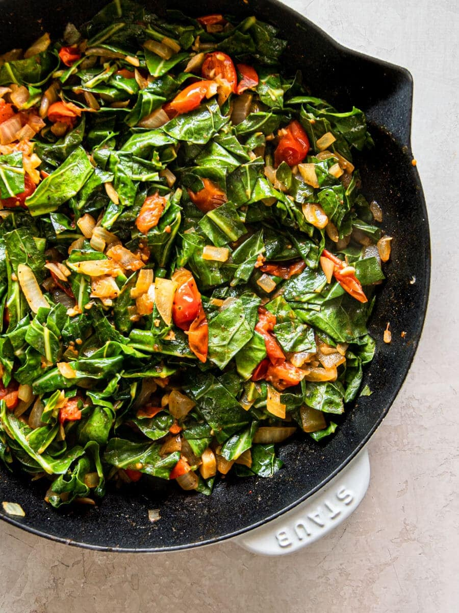

Collard Greens Recipe
Serves 4-6
Ingredients:
- 2 tablespoons of Olive Oil
- 1 pack of Smoked Turkey Neck
- 1 large Onion chopped
- 4 cloves of Garlic minced
- 2 tablespoons of Salt
- 1 tablespoon of Pepper
- 6 cups of Chicken Broth
- 2 pinches of Red Pepper Flakes
- 2 pounds of Fresh
How to Make:
- Clean each leaf, strain, then dry
- Sautee Onions and Garlic in olive oil in pot
- Add broth to large pot with Turkey Neck
- Bring to boil
- Lower, cover, and cook for 30 minutes then add Collards
- Cook for 45 45-60 minutes on low
- Add Salt, Pepper, and Red Pepper

Back to Home Page